Volume suficiente para análises robustas por filme, gênero, período e status de resposta.
Projeto em destaque
MovieLens Beliefs Analytics
Pipeline analítico end-to-end para transformar o dataset MovieLens Beliefs 2024 em uma base confiável de análise, com ingestão em cloud, modelagem dimensional, camada de consumo em BigQuery e dashboard no Metabase.
Visão executiva
Base analítica pronta para decisão
O objetivo foi construir uma camada confiável para explorar ratings explícitos, crenças elicitadas, recomendações e atividade de usuários. O projeto organiza dados brutos em uma arquitetura em camadas e entrega métricas consumíveis por analistas e times de produto.
Cobertura comportamental relevante mesmo sem atributos demográficos no dataset.
Camada de consumo criada para reduzir SQL repetido e padronizar métricas no dashboard.
Arquitetura
Pipeline em camadas no GCP
A arquitetura separa preservação do dado bruto, padronização técnica, modelagem analítica e consumo. Essa divisão facilita auditoria, manutenção e evolução do modelo sem misturar responsabilidades.
01CSVs MovieLens
02GCS bronze
03BigQuery raw external tables
04Staging tipado
05Marts dimensionais e views BI
06Dashboard Metabase
Stack
Tecnologias escolhidas por papel
Dados e cloud
GCS
BigQuery
SQL BigQuery
Kimball
Operação e consumo
PowerShell
Docker Compose
Metabase
Git
Decisões técnicas
Escolhas que tornam o projeto auditável
Raw preservado
As external tables mantêm todas as colunas como STRING, preservando o arquivo original e adiando decisões de tipagem para a camada correta.
Staging tipado
A camada de staging converte ids, datas, timestamps e campos numéricos, além de padronizar nomes em snake_case e tratar sentinelas como NA e -1.
Modelo dimensional
O consumo analítico usa dimensões conformadas, bridge multivalorada para gêneros e fatos com grãos declarados, reduzindo ambiguidade nas métricas.
Views de BI
As views agregam e formatam métricas para o Metabase, evitando que regras de negócio fiquem espalhadas em consultas manuais do dashboard.
Catálogo incompleto
Filmes presentes em fatos, mas ausentes em movies.csv, recebem placeholders controlados no padrão Unknown movie <movie_id>.
Gate de qualidade
O pipeline inclui checagens para fontes vazias, unicidade de grãos, integridade referencial, faixas válidas e consistência condicional de campos de belief.
Contrato e modelagem
Do evento bruto ao mart dimensional
A modelagem parte de cinco processos: avaliações explícitas, elicitação de crença, recomendações, curadoria de conjuntos de elicitação e catálogo de filmes. O processo central é a elicitação de crença, porque captura expectativas antes do consumo.

O ERD acima representa a modelagem lógica dos marts: dim_movie conecta todos os fatos e a bridge de gêneros; dim_user conecta os fatos comportamentais de beliefs, ratings e recomendações. A tabela abaixo complementa o diagrama com o grão e o papel analítico de cada objeto.
| Objeto | Grão | Papel analítico |
|---|---|---|
dim_movie |
Um filme por movie_id |
Dimensão conformada com título, título limpo, ano de lançamento e flag de ausência na fonte. |
dim_user |
Um usuário por user_id |
Registra presença e janelas observadas em ratings, beliefs e recomendações. |
bridge_movie_genre |
Um gênero por filme | Permite análise multigênero sem duplicar atributos em dim_movie. |
fact_beliefs |
Uma elicitação por usuário, filme, timestamp, movie_idx e fonte |
Fato principal para respostas vistas, não vistas e sem resposta. |
fact_ratings |
Um rating explícito por usuário, filme, timestamp e arquivo de origem | Base para popularidade, qualidade observada e evolução temporal de avaliações. |
fact_recommendations |
Uma recomendação por usuário, filme e timestamp | Contexto de previsões do sistema para comparar com comportamento e crenças. |
fact_elicitation_sets |
Uma inclusão de filme por mês e origem | Contexto de curadoria para entender quais filmes entraram em conjuntos de elicitação. |
Qualidade
Confiança antes do dashboard
O projeto trata qualidade como critério de consumo, não como etapa cosmética. O gate final precisa retornar zero linhas para que o dashboard seja usado como fonte confiável.
Integridade
- Fontes raw não vazias.
- Unicidade dos grãos declarados.
- Fatos relacionados às dimensões esperadas.
Domínio
- Ratings entre 0.5 e 5.0.
- Certeza entre 1.0 e 5.0.
is_seenrestrito a-1,0ou1.
Semântica
- Campos de filme visto e não visto separados por status.
- Datas declaradas tratadas com status próprio.
- Anos de lançamento plausíveis quando preenchidos.
Dashboard
Metabase como camada de leitura
O dashboard resume volume geral, cobertura de beliefs, participação de usuários, rankings de filmes, gêneros, padrões temporais, confiança das previsões e relação entre popularidade e qualidade.
Vamos conversar?
O que este projeto demonstra
O MovieLens mostra capacidade de estruturar um produto de dados completo: entender a fonte, definir contrato, modelar fatos e dimensões, criar regras de qualidade, separar camadas técnicas e entregar uma interface de análise. Mais do que mover dados, o projeto transforma um dataset público em um ativo analítico governável e explicável.